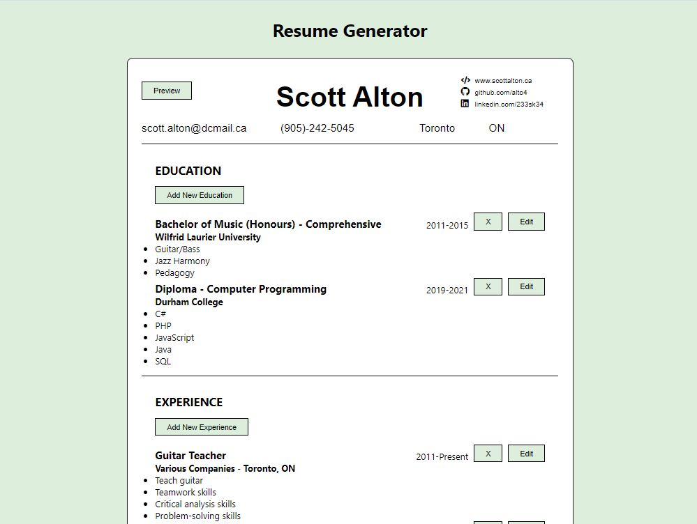

Today was focused on putting the final touches of the resume generator app.
A few small bugs remained after yesterday, so I started by dealing with removing placeholders in preview mode, then restoring them when edit mode is toggled back to. I also spend a bit of time styling the app and improving the documentation. There are still a few features I would like to add to the app eventually, and likely a few bugs that remain, but overall I am happy with my efforts at this point and feel ready to move on to focus on React Hooks.
I also spent a decent amount of time trying to deploy previous projects using webpack to GitHub pages. While this was a challenge at first and required a decent amount of research, after getting it to work for the first project using webpack, the rest were very smooth to get hosted on GitHub pages, and I'm glad to be able to share them in my portfolio.
Here is a snapshot of the resume generator project after the final day of work:
